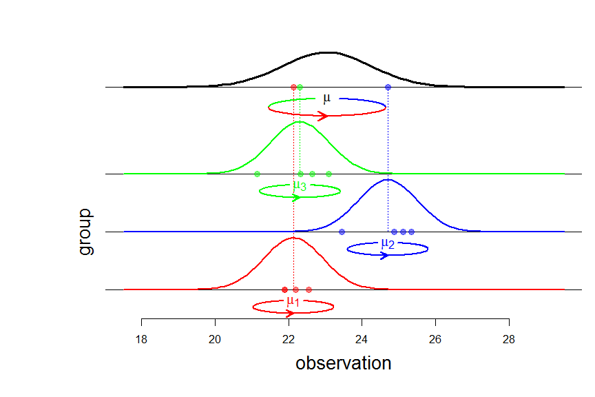

The balanced ANOVA model with random effects
- The balanced ANOVA model with random effects
- The three summary statistics \(\bar{Y}_{\bullet\bullet}\), \(SS_b(Y)\), \(SS_w(Y)\)
- Confidence interval for the overall mean
\(\newcommand{\indic}{\mathbf{1}}\) \(\newcommand{\perpoplus}{\overset{\perp}{\oplus}}\) \(\newcommand{\RR}{\mathbb{R}}\)
The balanced ANOVA model with random effects
The balanced ANOVA model is used to model a sample \(y=(y_{ij})\) with a tabular structure: \[y=\begin{pmatrix} y_{11} & \ldots & y_{1J} \\ \vdots & y_{ij} & \vdots \\ y_{I1} & \ldots & y_{IJ} \end{pmatrix}, \] \(y_{ij}\) denoting the \(j\)-th response in group \(i\).
In the model with random effects, it is assumed that the observations \(y_{ij}\) are generated in two steps. First, the group means \(\mu_i\) are independently generated according to a Gaussian distribution \({\cal N}(\mu, \sigma^2_b)\) where \(\mu\) is the overall mean and \(\sigma^2_b\) is the so-called between variance. Second, the responses \(y_{ij}\), \(j =1,\ldots,J\), for each group \(i\), are independently distributed according to a Gaussian distribution \({\cal N}(\mu_i, \sigma^2_w)\) with within variance \(\sigma^2_w\) and mean \(\mu_i\). Shortly, the model can be written: \[ \begin{cases} \mu_i \sim_{\text{iid}} {\cal N}(\mu, \sigma^2_b) & i=1, \ldots, I \\ (y_{ij} \mid \mu_i) \sim_{\text{iid}} {\cal N}(\mu_i, \sigma^2_w) & j = 1, \ldots, J \end{cases}. \]

An equivalent writing of this model, and from now on using capital letters for random variables, is \[Y_{ij} = \mu + \sigma_bA_{i} + \sigma_wG_{ij},\] where all random variables \(A_i\) and \(G_{ij}\) are independent and \(\sim {\cal N}(0,1)\).
The three summary statistics \(\bar{Y}_{\bullet\bullet}\), \(SS_b(Y)\), \(SS_w(Y)\)
Using the tensor product language introduced in this article, the model can be written \[Y = \mu({\bf 1}_I\otimes{\bf 1}_J) + \sigma_b A\otimes\indic_J +\sigma_wG, \qquad A \sim SN(\RR^I), \quad G \sim SN(\RR^I\otimes\RR^J).\]
The overall mean \(\bar{Y}_{\bullet\bullet}\) is given by the projection of \(Y\) on the subspace \([{\bf 1}_I]\otimes[{\bf 1}_J]\):
\[P_{[{\bf 1}_I]\otimes[{\bf 1}_J]} Y = \bar{Y}_{\bullet\bullet}({\bf 1}_I\otimes{\bf 1}_J).\]
Then the variations \(Y_{ij}-\bar{Y}_{\bullet\bullet}\) around the overall mean are given by the projection on the orthogonal complement \({\Bigl([\indic_I]\otimes[\indic_J]\Bigr)}^\perp\). Knowing that \[ \RR^I \otimes \RR^J = \Bigl([\indic_I]\otimes[\indic_J]\Bigr) \perpoplus \Bigl([\indic_I]^\perp\otimes[\indic_J]\Bigr) \perpoplus \Bigl([\indic_I]\otimes[\indic_J]^\perp\Bigr) \perpoplus \Bigl([\indic_I]^\perp\otimes[\indic_J]^\perp\Bigr), \] one gets \[ \begin{align} \underset{\text{'total'}}{\underbrace{ {\Bigl([\indic_I]\otimes[\indic_J]\Bigr)}^\perp} } & = \Bigl([\indic_I]^\perp\otimes[\indic_J]\Bigr) \perpoplus \Bigl([\indic_I]\otimes[\indic_J]^\perp\Bigr) \perpoplus \Bigl([\indic_I]^\perp\otimes[\indic_J]^\perp\Bigr) \\ & = \underset{\text{'between'}}{\underbrace{\Bigl([\indic_I]^\perp\otimes[\indic_J]\Bigr)}} \perpoplus \underset{\text{'within'}}{\underbrace{\Bigl(\RR^I\otimes[\indic_J]^\perp\Bigr)}}, \end{align} \] thereby yielding the decomposition of the variations: \[ P^\perp_{[\indic_I]\otimes[\indic_J]}Y = P_{[\indic_I]^\perp\otimes[\indic_J]}Y + P_{\RR^I\otimes[\indic_J]^\perp}Y, \] whose component formulae are:
\({\bigl(P^\perp_{[\indic_I]\otimes[\indic_J]}Y\bigr)}_{ij}=Y_{ij}-\bar{Y}_{\bullet\bullet}\)
\({\bigl(P_{[\indic_I]^\perp\otimes[\indic_J]}Y \bigr)}_{ij} = \bar{Y}_{i\bullet}-\bar{Y}_{\bullet\bullet}\)
\({\bigl(P_{\RR^I\otimes[\indic_J]^\perp}Y\bigr)}_{ij} = Y_{ij}-\bar{Y}_{i\bullet}\)
Now we can see that the three summary statistics (overall mean, between sum of squares, within sum of squares) \[\bar{Y}_{\bullet\bullet}, \quad SS_b(Y):={\Vert P_{[\indic_I]^\perp\otimes[\indic_J]}Y \Vert}^2, \quad SS_w(Y):={\Vert P_{\RR^I\otimes[\indic_J]^\perp}Y \Vert}^2,\] are independent random variables. Indeed, the overall mean \(\bar{Y}_{\bullet\bullet}\) is given by \[\begin{align} P_{[{\bf 1}_I]\otimes[{\bf 1}_J]} Y &= \bar{Y}_{\bullet\bullet}({\bf 1}_I\otimes{\bf 1}_J) \\ & = \mu({\bf 1}_I\otimes{\bf 1}_J) + \sigma_b(P_{[{\bf 1}_I]}A)\otimes\indic_J+\sigma_wP_{[{\bf 1}_I]\otimes[{\bf 1}_J]}G, \end{align}\] the between variations are \[P_{[\indic_I]^\perp\otimes[\indic_J]}Y = \sigma_b(P^\perp_{[\indic_I]} A)\otimes\indic_J + \sigma_w P_{[\indic_I]^\perp\otimes[\indic_J]} G,\] and the within variations are \[P_{\RR^I\otimes[\indic_J]^\perp}Y = \sigma_wP_{\RR^I\otimes[\indic_J]^\perp} G.\] Independence follows from the independence between \(G\) and \(A\) and from the orthogonality between the ranges of the different projections.
It is easy to derive \(\bar{Y}_{\bullet\bullet} \sim {\cal N}\left(\mu, \frac{\sigma^2}{IJ}\right)\) where \(\sigma^2=J\sigma^2_b+\sigma^2_w\). It is also easy to get \(SS_w(Y) \sim \sigma^2_w\chi^2_{I(J-1)}\) because of \[P_{\RR^I\otimes[\indic_J]^\perp}Y = \sigma_wP_{\RR^I\otimes[\indic_J]^\perp}G.\] To derive the law of \(SS_b(Y)\), note that \[
\begin{align}
P_{[\indic_I]^\perp\otimes[\indic_J]} G
& = \begin{pmatrix}
\bar{G}_{1\bullet} - \bar{G}_{\bullet\bullet} & \ldots & \bar{G}_{1\bullet} - \bar{G}_{\bullet\bullet} \\
\vdots & \vdots & \vdots \\
\bar{G}_{I\bullet} - \bar{G}_{\bullet\bullet} & \ldots & \bar{G}_{I\bullet} - \bar{G}_{\bullet\bullet}
\end{pmatrix} \\
& = (P^\perp_{[\indic_I]}G_{\text{row}}) \otimes \indic_J
\end{align}\] where \(G_{\text{row}} = (\bar{G}_{i\bullet})\) is the vector of row means of \(G\), and then one can write
\[P_{[\indic_I]^\perp\otimes[\indic_J]} Y
= \bigl(P^\perp_{[\indic_I]}(\sigma_b A + \sigma_w G_{\text{row}})\bigr) \otimes \indic_J.\] Now it is easy to see that the components of \(\sigma_b A + \sigma_w G_{\text{row}}\) are \(\sim_{\text{iid}} {\cal N}(0, \sigma^2)\), and consequently \(SS_b(Y) \sim \sigma^2\chi^2_{J-1}\).
Confidence interval for the overall mean
By our previous derivations, the statistic \[ \frac{\bar Y_{\bullet\bullet} - \mu}{\frac{1}{\sqrt{IJ}}\sqrt{\frac{SS_b(Y)}{I-1}}}\] has a Student \(t\) distribution with \(I-1\) degrees of freedom, wherefrom it is easy to get an exact confidence interval about the overall mean \(\mu\).
Note that we would get exactly the same confidence interval if we were told only the group means \(\bar{Y}_{i\bullet}\). This is the topic of another article.